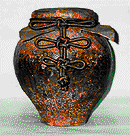

| 20秒で免疫力を高めるEGCカテキンの抽出法: 明日から日本の緑茶カフェを開店できるコンサルト本 | |
| 喜多重左衛門 | |
| pubfull (2017) | |
２０秒で免疫力を高める
EGCカテキンの抽出法
明日から日本の緑茶カフェを開店できる
コンサルト本
著者 １２代喜多重左衛門
目次
奇跡の抹茶一服
2000年にカナダに渡加をして、カナダにおいても日本緑茶の普及に努めてまいりました。海外では、日本人の健康長寿の秘密薬草として、日本緑茶に注目されていました。主に効能を中心としてのスーパーフードという位置づけでした。
私が2010年に不幸にも原発性アルドステロンという難病から脳内大出血で倒れました。3ヶ月間もの危篤でしたが危篤状態のときに2回心拍停止がありましたが、蘇生しています。
蘇生したのちにカナダの病院で十分な検査により病名が分かったことですが、原発性アルドステロン症でした。この病気は低カリウム血症を起こす病気です。心筋梗塞や、脳卒中を起こします。抹茶には、カリウムが含有しています。そのためにか私は、医者から奇跡的な病状から復活した経緯を聞いて驚愕しました。
私は脳出血の1時間前に抹茶をたっぷりと飲んでいました。これが、奇跡の抹茶一服 になりました。
2010年に日本に帰国をして、副腎摘出手術を受けたのちに３０年以上患ってきたＣ 型肝炎の治療をする際に私の判断で、インターフェロン治療を受ける1時間前に抹茶をたっぷりと飲用しました。見事に4回（1ヶ月）の治療でウイルスは消えました。通常は48回一年の治療が必要です。7年が経過していますが、肝炎は完治して肝臓もすこぶる健康状態です。
日本で有名な、掛川スタディのお茶の研究には、この治療法が記されています。私は、今になって知りました。現在の肝炎治療はもっと進んでいます。
私にとっては命を助けていただけた素晴らしい健康の源です。もっと緑茶を普及さし皆さんが健康長寿していただきたいと望むところです。
でも私には、左上肢下肢に障害が残っています。伝統的なお茶の作法などはできません。そこで、世界中のどなたでもおいしく日本緑茶を楽しんでいただける方法を閃きました。
喜多立玄は宇治御物師
喜多重左衛門は宇治御物茶師( 江戸時代、宮中および将軍家の御用をつかさどった宇治の茶師) 。喜多立玄の末裔である。私１２代喜多重左衛門が、実体験で培った知恵とお茶の論文から、実践に使える有効物質を破壊しない、喫茶法をお伝えします。科学的に実証された日本茶の効能を有効に抽出喫茶できるように教授するものです。
緑茶のうまみを引き出す覆い茶園
茶園におおいをかぶせて栽培する方法です。4月に新芽が出ると、葉を摘む前からよしずとわら、化学繊維などで覆い、日光をあてないようにします。テアニンからカテキンへの変化が少ないので、渋みが少なく、うまみが多いお茶ができます。
美味しいお茶（碾茶、玉露、かぶせ茶）を作るには、日光の当たり方のバランスが大切です。
2000年初期カナダのグエルフでの日本茶セミナー開催
発刊にあたり、はじめに
私（喜多重左衛門）は生まれたときからお茶のある暮らしでした。宇治史に残る宇治茶師喜多立玄の 12 代目になります。宇治茶師とは宇治で製茶業を営む碾茶( てんちゃ) 生産家の通称であります。碾茶とは、宇治伝統栽培である被服栽培茶園（玉露茶園）で栽培されます。碾茶（てんちゃ）は抹茶をつくる原料茶葉のことです。
１６世紀後半になると、宇治で「覆い下栽培」と呼ばれる栽培法が開発され、鮮やかで、濃緑色のあるうまみの強い茶が生まれ、日本随一の評価を得ました。日本特有の玉露茶の発明であります。
１７世紀初めに、徳川三代将軍家光は、茶代官に命じて朝廷献上茶と将軍家直用の高級茶を作らせ、江戸までの新茶の運搬を「お茶壺道中」として制度化し、以来２５０年間続きました。宇治の茶師たちは、この「お茶壺道中」の中核的な担い手として携わり、日本茶文化を長く支え続けました。
幕府御用茶師であった喜多立玄は、寛文九年（ 1669年） に、江戸幕府の御茶壷茶詰の儀を行いました。
天目茶碗

葉茶壷
20 秒で免疫力を高める緑茶の作り方公開
私には、左上肢下肢に障害が残っています。伝統的なお茶の作法などはできません。しかし、私は世界中のどなたでもおいしく日本緑茶を楽しんでいただける方法を閃きました。Youtubeで公開しています。
Youtube
新茶を冷水だしで入れ
2煎目の新茶をいれる
https://www.youtube.com/watch?v=D_fZm7kjgHo
玉露の冷水だし
https://www.youtube.com/watch?v=qHV_Hxxju8I
国際交流会館前庭で玉露を作る
https://www.youtube.com/watch?v=9aoqaJygQuY
CANADA ＣＴＶ出演
https://www.youtube.com/watch?v=FOhWUq4IcJY
クックパッドに搭載
緑茶の効能などを解説して私の長年による培った知識と安心安全な緑茶の有機栽培農家を日本中からよりすぐり、私が試した緑茶を推奨さしていただきます。
そして、世界の緑茶研究の論文を熟読して、私の健康維持のために開発した、有機抹茶を原料として特別に健康維持脳機能も健康にできるであろう緑茶や抹茶を毎日いただいています。
私たちが恵まれた日本文化の中から、日本人の健康長寿の日本緑茶健康法を掘り下げて考察をしました。そして、喜多重左衛門が実体験で培った知恵と緑茶の論文から実践に使える有効物質を破壊しない喫茶法をお伝えします。
YouTubeでご紹介したこの方法が初心者の方でも明日から、緑茶カフェを開店していただける解説になります。
私は奇跡的に健康になりました
私は奇跡的に健康になりました。これは、非常に幸運なことです。日本緑茶は日本人が1000年以上も愛飲してきた薬草です。まさに予防医学の秘薬だと考えています。しかし、日本緑茶・粉末茶・抹茶はお薬ではありません。健康長寿を目指すあなたに食事の工夫から生活習慣の中にお入れいただいて、おいしく簡単に安心安全な緑茶を愛飲していただき末永く健康長寿生活文化 になれば幸いです。
第１章 掛川市民は男女ともに日本で最もガン死亡率が低い
緑茶の産地である掛川市民は男女ともに日本で最もガン死亡率が低いという結果が示されました。 厚生労働省が公表する2008-2012 人口動態保健所・市区町村別統計データを分析すると、日本国内人口10 万人以上の市区において、掛川市が男女ともに最もガン死亡率が低いという結果が示されました。
これまでの 2003-2007 のデータ では、男性が２位、女性が１位 という結果がでており、各種メディアから大変注目されましたが、最新の2008-2012のデータでは男女ともに１ 位 とさらに素晴らしい結果となっています。
また、ランキング上位に静岡県内の市が名を連ねており、いずれもお茶の産地であることから、がん予防効果があるとされるお茶による影響の可能性が注目されています。
健康寿命と医療費
健康上の問題がない状態で日常生活を送れる生存期間について、厚生労働省が実施した「健康長寿調査」によれば、都道府県別の健康寿命（2013年 ）は、静岡県の男性が 3 位、女性が 2 位 でした。掛川市民の健康関連の調査結果として掛川市は疾病ごとのなくなる方の割合が、日本国内の平均と比べて癌で20.8ポイント、心疾患で8.1ポイント低い という結果でした。
後期高齢者医療一人当たりの医療費は全国平均と比べて２０％ 以上低くなっています。このことは、国の財政負担を軽減していることにつながります。
喜多重左衛門が強く日本緑茶を推奨する根拠
それは私自身の体験と血筋にありますが、日本で一番緑茶生産量の多い静岡県、特に掛川市における掛川市民の健康調査に由来をします。
2009掛川スタデ ィ（農林水産省委託事業）
緑茶のもつ生活習慣病改善効果の検証と効果的な摂取を可能にする新食品の開発を目的にして調査が始まりました。
事業期間 2009年6月から2012年3月
掛川スタディは大規模な栄養疫学研究
『' 08掛川スタディ』研究で研究総括者として指揮をとった掛川市立総合病院副院長 鮫島庸一氏、協力者 東北大学教授 栗山進一氏、野菜茶業研究所研究チーム長 山本万里氏らが提案した研究『 緑茶のもつ生活習慣病改善効果の検証と効果的な摂取を可能にする新食品の開発』が農林水産省所管の新たな農林水産政策を推進する実用開発事業に採択され、2009年6月より三者が共同して、大規模な栄養疫学研究を開始しています。
この研究事業は"掛川市における研究"という意味で通称『掛川スタディ』と呼び、各研究者が担当する『緑茶コホート研究』、『緑茶介入試験』、『緑茶の形態による吸収への影響解析』、『カテキンレセプター発現量の解析』などの研究が実施されました。
掛川スタディ研究の背景
更新日： 2011年11月17日
1 各研究者における研究実績東北大学では大規模コホート研究によって、緑茶摂取により循環器疾患脂肪リスクが有意に低下することを発見した。
※ 掛川市立総合病院では 、Ｃ型肝炎のインターフェロン治療に緑茶を併用し治療効果を高めている。（NO１ 具体的リーフ茶）
※ 野菜茶業研究所では 、抗アレルギー作用のある茶品種を用い、飲食品、スキンケア商品を開発した。（NO2 具体的リーフ茶）
※ 茶カテキン類の脂質代謝改善効果、糖尿病改善効果 が動物実験で示唆されている。（NO3 具体的リーフ茶）
掛川市では先行試験として2008年に『やぶきた』の吸収率試験、生活習慣病予防効果の検証のための試験を実施した。
NO1の考察
私が実際に慢性Ｃ型肝炎の治療をした際に,この時点では掛川スタディ（C型肝炎に対する効果）を知りませんでした。カナダで日本緑茶を推奨しているときにいろいろ体験した奇跡の抹茶一服 から有機栽培の抹茶をたっぷりとよく水に混ぜて飲用してから、約１時間後にインターフェロン治療を行いました。結果、4回の治療（1ヵ月）でウイルスは消え去りました。本来ならば、48回、１年の治療になります。
私の推奨する緑茶は、ずばり私が選んだ宇治抹茶 です。一日約6g（3回の食後）の飲用をお勧めします。
私は約82度の高温の湯を使用してお茶を入れるとカテキンの異性化が起こることを知っていたので、酵素も破壊しない温度で抹茶を入れました。具体的に言えば常温水の水に有機抹茶を小型シェーカーに2gいれてよく拡散さします。よく混ぜてゆっくりと飲み干します。これを朝昼夜の食後に飲みました。
掛川スタディーの研究では
要旨※ 難治性Ｃ型肝炎の治療時 に粉末緑茶を一緒に摂取することが有効である。
概要 難治性C型肝炎の最も標準的な治療方法である「インターフェロン」と「リバビリン」の投与に加え緑茶粉末を服用したところ、9人中5人でウイルスが消滅し完治した。標準的な療法での完治率は10〜20％ であることから、緑茶併用は効果的と考えられるという研究結果でした。
現在、カテキンの体内吸収 は、さまざまな研究より、カテキンは体内に吸収しにくいので、ビタミンＡ やビタミンＥ とともに摂取するほうが、吸収率が良くなるというデーターがあります。抹茶には、その両方のビタミンが含有しています。煎茶粉末には、このビタミンＡの含有は少量です。そのほかに牛乳とカテキンを混ぜ合わせるとカテキンの体内吸収率が上がる という飲み合わせがあります。私の見解では、日本人に多い乳糖不耐症の関係から何とも言えません。私のような乳糖不耐症の方は気を付けてください。
NO2の解説
掛川スタディーより アレルギー緩和に関するもの
対象成分...メチル化カテキン
※ メチル化カテキン を多く含むべにふうき茶エキス入りクリームの塗布によりアトピー性皮膚炎の症状を抑制する。
概要 アトピー症状をもつ子ども28人に、べにふうき茶エキスを含むクリームを塗布すると、含まないクリームを塗った場合に比べ、ステロイド外用剤の使用量が減った。長期使用（6か月)後のアンケートでも「大変良い」が半数以上であった。紅茶品種のべにふうきという品種から発見されました。リーフ茶も粉末茶もあります。
ご自分で作られるのなら、ティーバッグをお風呂に入れて入浴する方法や、ガーゼにエキスをし見込ませて体に優しくあてがいます。または、粉末べにふうきを茶の種子のオイルに混ぜて使用します。
ただし、アトピー皮膚炎には専門家の治療が必要と考えます。私は、べにふうきカテキンの安定した状態を確保するためにお茶の種子のオイルに溶解をさすのが状態をキープできると考えるからです。
NO3 の解説
実験 対象成分...カテキン
※ 緑茶を1日7杯程度飲むことで糖尿病 になりかけている人たちの血糖値が改善 することを発見。
概要 糖尿病一歩手前（境界型）などに該当する60人を、実験用の粉末茶を毎日飲むグループと飲まないグループに分け2か月後の血糖値を測定。「ＨｂA1ｃ」という指標で血糖値が、飲んだグループは6.2％ →5.9％ 飲まないグループは変化がなかった。カテキン摂取量が影響したと思われる。
緑茶葉（有機深蒸し煎茶 ）を１〜２回で茶葉を新鮮なものに入れ替えて飲みます。カテキンを異性化させずにお茶を入れる温度は、７０〜８０度です。
または有機深蒸し粉末茶 を常温水に混ぜてお飲みください。
※ カテキンに抗ウイルス効果 、緑茶は飲めばメタボ改善の効果。
[201５年１２月2４日]: 同県掛川市立総合病院緑茶医療研究センターの鮫島庸一センター長の発表
緑茶粉末・偽粉末──の２群に分けて、各２ｇを１日３回毎食後に約３ヶ月（12週）飲んでいただき（１日お茶６杯に相当）、体重、ウエスト、中性脂肪の変化を見てみました。普段緑茶を飲んでいない人では、平均体重が緑茶粉末グループで０・５２kg減少、偽粉末グループでは０・２７kg増加と、統計的有意差があり、緑茶の摂取がメタボリックシンドロームに有効である可能性が示されました。
第２章 緑茶は日本の文化的飲料、緑茶で生活習慣病を科学する
掛川スタディ研究の意義
更新日： 2011年11月17日
現在、国内のメタボリック症候群・予備群該当者は2,000万人いると言われ、日本人の約3分の2が生活習慣病で亡くなっている。また、世界の糖尿病患者は2.3億人といわれ増加の一途をたどっている。そのような中で緑茶の抗動脈硬化作用 が多くの動物実験から示されるなど緑茶の健康機能が注目されつつある。
しかし、人を対象とした証拠は少なく、緑茶の効能は科学的には確立されていない。
掛川スタディは、緑茶の健康機能について人を対象とした科学的根拠を集め、緑茶のどのような品種が最も効果があるかを解明し、新食品を開発することを目的に実施するものです。
世界をマーケットにした茶業振興 ・人々の健康向上に寄与するためです。
生活習慣病とは、食事や運動、ストレス、喫煙、飲酒などの生活習慣がその発症・進行に深く関与する病気の総称をいいます。 生活習慣病には、糖尿病、高血圧症、脂質異常症、肥満、心臓病、脳卒中などがあります。
緑茶生産地の健康状況
掛川市 など県西部地域では住民の死亡率（全死因SMR）が静岡県の中でも低く、健康的な地域 となっています。一因として、国内有数の緑茶生産地 である静岡県の中でも生産量が多い地域であるため、緑茶（リーフ茶）の飲用が健康に影響 を与えているということが、考えられます。
全死因SMR（総数： 2001年から2005年）
日本緑茶の現況
静岡県は緑茶の生産量が全国の40％ ほどを占め日本一の緑茶産地です。しかし、最近は消費者の緑茶（リーフ茶）離れ、外国からの輸入茶葉（中国産）の増加、茶系飲料ペットボトルの普及などによって静岡県に限らず、手塩にかけて育ててきた茶園の管理が生産者の高齢化に伴い厳しい現状になっています。
そして、日本人の茶の間での文化が失われてきています。現実には荒茶生産量も減り、茶葉の平均価格も下がってきており、国内の茶業関係者にとっては厳しい状況となっています。後継者に魅力のないきつい仕事になってきています。
私たち消費者が、日本の文化でもある質の良い茶のある暮らしを継続して安心安全な茶栽培の後継者づくりや有効成分を破壊しない喫茶の担い手にならなければならないと思います。そのことが、茶の文化を次世代に継続していく第一歩だと考えます。
その学習のためにも、自分でリーフ茶葉を選んで自分の所作で楽しんでいただきたいものです。
その一歩として急須を使用しないでも誰でも出来るおいしい緑茶の作り方を公開して、小さなお茶の普及活動の礎になればよいと考えます。
掛川スタディ研究総括者・緑茶コホート研究担当
野菜茶業研究所 山本万里先生
緑茶カテキン感知機能と解毒機能に対する緑茶摂取の影響担当
私どもは緑茶の飲用法の違いによるカテキン類の体内への吸収性の違い、共存物質の吸収性への影響を調べました。緑茶を飲んでもほとんどカテキンは体内に取り込まれないため何とか吸収性をあげたいというのがその趣旨です。その結果、粉末茶では、粉末の粒径を2ミクロン程度まで小さくするとEGCGやECGの吸収率が上昇する こと、粉末茶に牛乳をまぜあわせるとEGCGの吸収率が上昇する ことを見いだしました。今後もカテキンの吸収率を上げ、生活習慣病に役立つ緑茶の研究をしていくつもりですと述べられています。現在のカテキンの体内吸収は、さまざまな研究より、カテキンは体内に吸収しにくいので、ビタミンＡやビタミンＥとともに摂取する ほうが、吸収率が良くなるというデーターがあります。抹茶には、その両方のビタミンが含有しています。煎茶粉末には、このビタミンＡの含有量が少なくなります。そのほかに牛乳とカテキンの飲み合わせがあります。しかし、日本人に多い乳糖不耐症の関係から何とも言えません。
喜多重左衛門の見解は、私は乳糖不耐症です。特に低温殺菌の牛乳は飲めません。 日本の食料品店で販売されている牛乳は高温殺菌が多いですが、日本人に多い乳糖不耐症の方はその点に気を付けてください。カテキンが腸内細菌の善玉菌を増やす役割がありますので、乳糖不耐症の気持ち悪さを感じないかもしれません。しかし，そのことを認識してください。
抹茶を混ぜるときのコツは、ミキサー（ブレンダー）に牛乳を200ccをいれて、そのあとに抹茶２ｇをいれて、拡散をします。
脅威の緑茶飲用 ------掛川スタディ がん死は全国トップの低さ。 循環器疾患死も少なく、 医療費は約半分
カテキンに抗ウイルス効果、緑茶は飲めばメタボ改善の効果。
深蒸し煎茶の解説
掛川でよく飲まれている深蒸し茶について
煎茶は通常よりも茶葉を長く蒸す製法。色が濃く、細かい浮遊物がたくさん含まれているのが深蒸し茶の特徴です。日本緑茶は新芽を摘みすぐさまに工場で酸化酵素の活性を止めるために蒸します。その蒸し時間が長いため、茶葉の組織が崩れて様々な栄養成分をより多く抽出できます。沸騰したお湯を湯飲みに注いで70〜80度に冷ました後、急須に静かに注いで30〜60秒ほど、お茶からおいしい成分が出るまでじっくり待ってからお召し上がりください。お茶は頻繁に新しいものに変えてください。
深蒸し茶をお湯で入れた画像
第３章 伝統日本緑茶に科学を融合した新しい黒麹茶の紹介
安心ダイエットの朗報です。 微生物制御発酵茶
糖尿病や肥満の方にも試していただきたいお茶です。
昔のプアール茶のブーム。ダイエットに効果とうたわれましたが、ダニやカビが混入しているので中国プアール茶（雲南茶）のブームは去りました。でも現在、日本の黒麹で発酵をする 特許取得の新製法のお茶に出会いました。中国茶の欠点をすべてクリアーしています。
最近，この後発酵茶に分類される新しい微生物発酵茶が日本国内で開発され製品化している。そしてAspergillus sp.のみにより発 酵した微生物発酵茶から2種の新規ポリフェノール性化合物テアデノール（teadenol）AおよびB が単離され構造が明らかとなった。Aはエピガロカテキンガレートから，Bはガロカテキンガレートから生合成されたと考えられている。テアデノールには脂肪細胞から分泌されるアディポネクチンの生産促進作用が認められており、アディポネクチンの分泌量が低下すると内蔵脂肪が蓄積しやすくなることから微生物発酵茶由来の新たな抗メタボリックシンドローム成分として期待が高細胞内シグナル伝達の制御因子であるプロテインチロシンフォスファターゼ 1Bの生産抑制作用も認められており、こちらも糖尿病や肥満 との関連が知られていることからその改善効果も期待される。さらにテアデノールにはヒトの皮膚におけるメラニン産生を抑制する ことも明らかとなった。
山吹撫子 English explanation 英語解説
http://www.y-nadesiko.jp/yamabuki_english.pdf
その効果は、美白成分として化粧品などに利用されるコウジ酸と同程度。 テアデノールは微生物発酵により生成することから、今後、工業的な生産方法が開発されることにより機能性素材として機能性食品のみならず化粧品などの医薬部外品への利用も考えられる。その効果が認められれば、温泉地にある緑茶風呂に代わって微生物発酵茶が使われる日がくるかもしれない。
新発見のポリフェノールとはテアデノールA・テアデノールBという成分
テアデノールは、東京医科歯科大学の学内ラボに拠点をおく臨床試験機関・オルトメディコ、筑波大学、リバーソン（河村先生の会社）の共同研究によって、糖尿病予防、がん疾患予防、内臓脂肪の減少に効果が認められ、現在、諸々の特許申請中とのこと。長期間飲みつづけたモニターからは「中性脂肪が減った」「尿酸値が激減した」「コレステロール値が下がった」「半年で体重が6キロ減った」 という声が寄せられており、実際、私も便秘に悩む友人 に勧めたところ「今まで飲んだお茶の中で一番効果があった」と聞いています。
山吹撫子はこんな女性におすすめします
＃ ダイエットに関心のある方
＃ 健康で美しくありたい方
＃ 天然成分にこだわりたい方
＃ 手軽に毎日飲みたい方
静岡県内でも有数の有機茶の産地となった浜松市春野町の茶生産家 が、標高約300ｍ〜500 ｍの山間の茶園で農薬・化学肥料を一切使用しない有機栽培で育て、香りを良くする工夫をした有機のお茶を原料 にしています。有機茶だからこそできる香りづくりの方向性があり、生産家の創意工夫によって新しいお茶づくりへの可能性がいま広がりつつあり研究を進めています。
山吹撫子ー微生物制御発酵茶の製造工程
（左）黒麹茶 （右）有機荒茶
加水
黒麹菌が動きやすいように、原料となる茶葉に水分を加えます。水分が均一になるように機械で混ぜ合わせながらの作業になります。
殺菌、菌付
黒麹菌のみが生育する為に、水分を加えた茶葉を、殺菌器で殺菌します。薬品などは使用せず、高温の蒸気を用いた殺菌方法です。
殺菌を終えた茶葉に、黒麹菌を散布します。均一に発酵が進むように、茶葉を混ぜ合わせながら作業します。
発酵
発酵中は茶葉が、かなりの熱を持ちますが、温度が上がり過ぎないように温度センサーでの管理を行いながら、日に何度か混ぜ合わせます。
黒麹菌の働きにより緑茶が「山吹撫子」生まれ変わるのを待ちます。
再殺、菌乾燥
発酵終え、「山吹撫子」となった茶葉を、黒麹菌の働きを失活させる為に再び殺菌します。
再殺菌を終えた茶葉は乾燥機にかけられます。乾燥を行う事により、味、香りと共に、保存性も向上します。
製法は、清潔で自然な香りの微生物制御発酵法
（株）リバーソンが特許を持つ日本で生まれた新しい微生物発酵茶の新製法が『微生物制御発酵法』。 その特許の使用契約を結び、最新の設備を持った清潔な黒麹発酵茶専用の工房を作った上で、工房自体も有機認証を得ています。工房内は衛生管理を徹底し、雑菌を徹底的に排除した『発酵室』内で、有機茶を原料に専用の黒麹菌だけを使って微生物制御発酵をさせています。余分な雑菌を徹底排除した結果、甘く自然なすっきりした香りと、コクのある有機の黒麹発酵茶を実現しました。
山吹撫子 ティーバッグ 5gx30袋 3240円 (1袋約1Lで約30L分）
山吹撫子 ティーバッグ 5gx7袋 864円 (1袋約1Lで約7L分）
山吹撫子 粉末茶 40g入り（湯呑約60杯分） 1296円
成分の特長は、没食子酸・カテキン・クエン酸
● 「没食子酸」
微生物発酵によって茶葉内のカテキンの一部が分解されて生成される成分です。黒茶・プーアル茶と同様に、微生物発酵茶の特長的な成分で、緑茶より格段に多く生成されます。
● 「カテキン」
茶葉に含まれるポリフェノールですが、微生物発酵の過程で「重合ポリフェノール」へと変化して行くため、黒茶・プーアル茶ではほとんどなくなってしまいます。しかし、《微生物制御発酵法》による『山吹撫子』ではカテキンの一部が残っているのが特長の1つです。
● 「クエン酸」
緑茶にはない微生物発酵によって生成される成分の1つです。
安全性を、安全性評価センターで検査・確認
『山吹撫子』の食品としての安全性の確認のために、食品や医薬品などの安全性を検査し評価する機関である（財）食品農医薬安全性評価センターに検査を依頼して、『遺伝子突然変異誘発生が陰性』 であることを確認。安心してお飲みいただける製品である事を確認しています。
JASの認定を受けている発酵茶です。とにかくすごいとしかいいようがありません。飲みやすく、その効果は私にとっては、すこぶるおなかをきれいにしてくれています。私は、左足に障害を持っているので、運動不足です。私は、体重の増えることを恐れています。健康食をしていてもどうしても食べ過ぎています。発酵茶は、普通かび臭がしますが、それの全くない甘く自然なすっきりした香りのお茶です。その点、科学的に検査を行っていますので安心です。お茶を作る時間がない人には、粉末茶をお勧めします。ただ水、お湯に混ぜるだけです。食後には、飲んでおきましょう。

第４章 緑茶のうまみを引き出す覆い下園（玉露園）
茶園におおいをかぶせて栽培する方法です。4月に新芽が出たら、葉を摘む前からよしずとわら、化学繊維などで覆い、日光をあてないようにします。テアニンからカテキンへの変化が少ないので、渋みが少なく、うまみが多いお茶ができます。
美味しいお茶（碾茶、玉露、かぶせ茶） を作るには、日光の当たり方のバランスが大切です。
覆い下栽培（被覆栽培）
テアニンからカテキンへの変化が少ないので、渋みが少なく、うまみが多いお茶ができます。（碾茶 ・玉露 ・かぶせ茶）日光が少なく-----------渋みが少なく、うまみが多い。
宇治伝統本よしず（被覆栽培園）玉露園
玉露園（被覆栽培園）
宇治茶の産地に昔から伝わる茶園のおおい方です。丸太の杭と竹で棚を作り、その上によしずを広げてわらを敷きます。茶園は温度が低く、湿度が多くなるので、新芽はゆっくり成長します。現在は本ずをまねて、鉄骨の棚の上に化学繊維をかぶせます。覆いを二段式にして通風性を高め茶園の湿度が高くなるのを防ぎます。
おいしいお茶を作る秘訣は新芽に当たる日光の当たり方のバランスが大切ですし、経験が必要になります。
第５章 ここでおいしい冷たい玉露を作りましょう。
高級急須がないですか。でも大丈夫です。
これを覚えるとアルバイトの方でも、上手に冷茶ができます。
冷水玉露の出し方
今日は、急須を使用しないで、冷茶のつくり方をご覧に入れます。
私の喫茶法は、日本緑茶をスーパーフードととらえています。
緑茶が世界的に有名になったのは、抗癌作用でありました。
私の設立した喫茶道・喜多重左衛門を簡単に説明します。それは、
緑茶の効能を破壊しないで簡単に作ることです。
わかりやすく実例を示します。
緑茶に含まれている多糖体(ポリサッカライド)の成分は、
抽出する温度が高ければ、破壊されます。
ならば、常温水もしくは冷水で抽出すればよいわけです。
又、茶葉を使用するよりは、粉末状態(抹茶)の方が、
はるかに、緑茶の栄養素、ミネラル効能物質が得られます。
では、玉露葉をどのように抽出するかといえば、
用意するもの
１．ブレンダ---・茶こしと湯呑みを用意をします。
２．二人前の宇治有機玉露葉を8グラムを用意します。
一人前（4ｇ）
３．常温水100cc(軟水を用意します。一人前（５０ｃｃ）
今日は、2人前のお茶を抽出します。
４．小型のブレンダ---容器に玉露葉と水を入れます。
5．20秒間ブレンドします。
6．容器から茶こしを使って注ぎます。
注意）一般に玉露点前でいただく玉露には、ごく小さい急須と湯飲みを使用します。湯呑には20ccも入っていません。ですが、日本茶カフェということでお客様から料金をいただきます。
私は、50ccも入っていれば十分であると思いこの設定にしました。お茶の濃さも十分に味が出ています。もしも、お客様が濃い味に慣れておられなければ、少し水を足せるようにしてあげてください。また、真夏の暑いときには、大きい氷に玉露茶をかければ、氷が解けて、お茶の味が薄くなりますから、その点を考慮してください。ブレンダーに氷、水と玉露茶葉をいれて初めから冷玉露を作る方法もあります。
2回目のお茶のつくり方
茶こしに残った砕かれた茶葉をブレンダ---の容器に戻します。
水を100㏄ 加えます。
20秒間ブレンドします。
容器から茶こしを使って注ぎます。
なお、youtube で動画を載せています。
玉露冷茶の作り方
国際交流会館前庭
茶食のすすめ
玉露の細かくなった茶葉をポン酢やしょうゆまたはデザート感覚でビートシュガー、黒蜜を混ぜて食べてみましょう 。国際交流会館前で撮影した動画において、私が招いた外国人の奥様が初めて玉露を使った冷茶法の後、茶殻にポン酢をかけて召し上がれました。そのときの驚きが動画で見られます。おいしいですよ。また、この茶葉をケーキとかドレッシング料理に使えます。
もしも、和菓子をいただくのであれば、1回目のお茶を飲み終わって、玉露の味を堪能したのち2回目のお茶を作る前に食べましょう。2回目の玉露の味は、苦みが出ます。この要領でもっと冷たい冷茶を作るのであれば、冷水もしくは、氷を使用します。あなたの好みにして楽しんでください。
碾 茶
茶を摘採まで少なくとも20日以上被覆して新芽を摘み取ります。生葉を蒸して揉まずに乾燥せしめたものである。玉露と同様、収穫前に被覆した茶葉を蒸し、碾茶炉で乾燥して製造する。煎茶のように茶葉を揉む工程が無いため、形状は青海苔に似ている。その香気は玉露同様独特のかぶせ香があり、適度に香ばしい。
茶葉の中でもテアニンというアミノ酸の一種（グルタミン酸の誘導体）を多く含み（玉露も同様）、リラックス・集中力を高める効果がある。
抹茶 とは この碾茶を石臼で挽いて粉末状にしたものであり、その保存に用いられたのが茶壺（葉茶壺）である。
写真は手挽き茶臼・抹茶
日本茶業中央会 の定める抹茶の定義 は「覆い下で栽培された生葉を揉まないで乾燥した碾茶を茶臼で挽いて微粉状に製造したもの」となっている。そして、「『茶臼で挽いて』という表現は粉砕の代表例を示したもので、他の方法で微粉末にしても「抹茶」と言えるとしており、粉砕機 で挽いたものも抹茶と認めている。この定義に当てはまるものが食品表示 で「抹茶」とされている
テアニンのリラックス作用
テアニン は、お茶の旨みを引き出すばかりでなく、緊張を解いたり、興奮を静めたりして気持ちをリラックス させる働きがあります。お茶を飲むと1時間たたないうちに、リラックスしているときの脳波であるα 波が現れる という実験結果もあるほどです。お茶には多量のカフェインが含まれていますが、緑茶を飲んでも神経が高ぶらないのは、 カフェインの興奮作用をテアニンが抑制 しているのです。α 波が増えると筋肉の緊張がほぐれて血管が拡張し血流がよくなるので、 冷え症の改善 や 高血圧の予防 にも効果が期待できます。

緑茶のうまみ成分Ｌ−テアニンを200㎎ を摂取したのち30〜40分後には、リラックス効果が現れます。
脳波測定の臨床実験結果
NPO法人国際総合研究機構・生体計測研究所
脳活性・脳波誘導装置使用３０分で、ストレス脳波（β 派： 青）からリラックス脳波（α 派： 赤）あるいはひらめき脳波（θ 派： 黄）に大きく変化。
テアニンの安眠作用
テアニンは神経（特に脳神経）の興奮を鎮める作用があるので、安眠にも効能があることが報告されています。
テアニンの集中力を高める作用
テアニンを摂取することで緊張がスムーズに取り除かれ、集中力が増すことによって成績やパフォーマンスがアップする効果も期待できます。
さらにテアニンは脳血液関門を通過することのできる物質であるため、脳に直接働きかけて、脳の神経伝達物質であるセロトニンやドーパミンを活性化することにも役立ちます。これらの物質は記憶力や学習能力を高める作用もあるのです。
テアニンと月経前症候群（PMS）、更年期障害
多く女性が月経前症候群（PMS）や更年期障害に苦しんでいますが、テアニンにはこのような女性特有の悩みをサポートする働きも認められています。（月経前症候群（PMS）や更年期障害）特にPMSによるイライラ、むくみといった症状を改善するのに役立つとされています。またテアニンを摂取すると、筋肉は弛緩するため、その結果血行が促進され冷え性やむくみにも効果があると考えられています。
テアニンの高血圧予防作用
テアニンには高血圧に有効に働くという報告もあります。緊張をほどいたり、筋肉を弛緩することで血流が促進されるためでもありますが、タンニンに過剰なグルタミン酸を抑える働きがあると考えられているからです。
他にもガン抑制作用はアルツハイマーに対する研究も進められています。そもそもお茶は万能の飲み物の１つですが、日本人が長寿であるのも緑茶との深い関係が指摘されており、その背景にはテアニンパワーが隠されているのかもしれません。
喜多重左衛門有機宇治テアニン抹茶ZEN
有機栽培宇治抹茶
テアニンの含有量は100ｇ当たり1090㎎ の含有です。
３０ｇ 3000円
緑茶のうまみ成分テアニンの生成について
お茶には、テアニンという物質が含まれている。このテアニンはお茶のうまみを出すアミノ酸です。根で作られて葉まで移動します 。その葉に日光が当たると渋みを感じるカテキンに変わっていきます。
まろやかな味わいを持つ玉露や碾茶（抹茶の原料）は日光を避けて育てた茶葉なのです。ここに露地栽培された煎茶と被覆栽培で育てた茶葉の味わいに違いがあるのです。
第６章 日本オーガニック＆ ナチュラルフード協会オーガニックを知ろう
特定非営利活動法人より抜粋
オーガニックの意味はなにか？
オーガニックは、有機と同じ意味です。
農薬や化学肥料に頼らず、太陽・水・土地・そこに生物など自然の恵みを生かした農林水産業や加工方法をさします。
オーガニックが広まることにより、人や動植物、微生物などすべての生命にとって、平穏かつ健全な自然環境・社会環境が実現します。
国際的な規模で有機農業推進活動を行っているIFOAM(国際有機農業運動連盟) は、オーガニックの原則として「生態系」「健康」「公正」「配慮」の4項目を掲げています。
オーガニックの目的はなにか？
多くの人は「化学農薬や化成肥料を使わないで、食品の安全性を高めること」と答えるでしょうか？
しかし残念ながら、食品の安全性というのは、オーガニックの目的ではなく結果に過ぎないのです。
オーガニックに何を求めるか？
それは人それぞれ、「安全」「健康」「美味しい」「綺麗」など、どのように考えてよいのです。でも忘れてならないのは、私たち人間は微生物や植物がいなければ生きていけないという事実です。
微生物が自然界にある有機物を分解し、それを植物が吸収して育ち、光合成で栄養を作る。私たち人間を始めとする動物はそれを食べて生きている。土の中でも、水の中でも、地球上の生命はすべて食物連鎖でつながっています。
つまり、私たち人間が末永く健康であろうと願えば、微生物や植物の生存環境(汚染のない水・大気・土)を考えないわけにはいかないのです。
ゆえにオーガニックは、化学農薬・化成肥料、そして環境ホルモンや遺伝子組み換え技術を避けて、自然のままの健全な食物連鎖を目指すのです。
オーガニックは安全？危険？
実際にこういう疑問を持っている方は多いようです。
ことさらに、オーガニック食品は「安全」とアピールする人が多いから、こういう質問がでてくるのでしょうか？
結論を先に言えば、オーガニック食品は一般の食品より安全です。
正確を期せば、「安全性が高い」あるいは「危害リスクが低い」と言うべきなのでしょうが、敢えて一般の食品と比べた場合には、安全だと言い切ってしまいます。
食品の安全は、3つの危害要因(異物などの物理的危害、菌類などの生物的危害、農薬や重金属等による化学的危害)が一定以下に抑えられているときに実現します。
このうち、物理的危害と生物的危害は、食品衛生法の下ですべての食品の安全性が担保されており、オーガニックが特別すぐれているわけではありません。しかし、化学的危害リスクは明確に異なります。
オーガニックは、田畑で使う資材をはじめ、加工食品の添加物についても、可能な限り化学的なものを排除していますから、化学的危害リスクは一般の食品に比べて極めて低くなっているのです。
そうは言っても、オーガニックは「化学物質不検出」を保証するものではありません。
そもそも危害リスクが皆無の食品など存在しません。
あくまでオーガニックと一般食品の化学的危害リスクを比較した場合に「安全」ということです。
というわけで、オーガニック＝ゼロリスクは、過剰な期待といえるでしょう。
オーガニックは美味しいか？
オーガニック食品の購入動機に関する消費者調査では、「美味しいから」というのが多い。
また、学校給食の分野では、野菜嫌いの子供がオーガニックなら喜んで食べるという例が数多く報告されています。
よって、一般論としては「オーガニック食品は美味しい」と言えるでしょうが、個々のケースで必ず美味しいかというと、それはなかなか断言し辛いですね。
家庭菜園で野菜を作った経験のある方なら実感できると思いますが、同じ畑で作った同じ品種の野菜でも、タネを蒔いた日やちょっとした条件の違いで、一つ一つ微妙に味が違う。また、収穫後の保管方法によっても味には違いが出ます。
例えばトマト。
遠距離流通する場合は、赤く熟す前に収穫して出荷します。これは、スーパーの店頭に並ぶときに、熟しすぎてしまうのを防ぐためです。
本当に美味しいトマトを食べたいと思えば、畑で真っ赤に熟したものをその場で頂けば良い。しかし、都会ではなかなか難しいですね。
一ついえることは、オーガニック食品は自然に近い味がする
これは、家庭菜園をオーガニックでやってみれば誰でも実感できるはずです。
畑がなくても、プランターで作れる野菜もたくさんあります(トマトは比較的カンタンです)。庭やベランダでぜひ試してみてください。
渾身の有機栽培宇治玉露を推奨しています
ところが、実は奇跡の玉露栽培なのです。それは、高地である必要と、玉露は多くの肥料が必要となります。ただし有機の基準を守るためには、化学肥料は使用されません。一般に出回っている有機栽培でないお茶は、甘みのある茶(窒素過剰な土地で育つ)を高級と判断するためで、市場性が関係しています。まず、有機栽培では使用できる肥料が有機肥料であるのです。多くの肥料を茶圃場に投入をしますと、自然界で餌を探している虫が栄養たっぷりの新芽を食しにやってきます。当然生産性が落ちることから、農薬を使用するのです。ところが、有機では認められていません。私は日本一の玉露、抹茶の味を知っています。残念ながら、有機の味はそこまでは届きません。しかし、自然のうまみを十分に感じることができます。抹茶はすべてをいただくことから、安心にいただきたいものです。
粉末茶とリーフ茶ではどちらが、有効機能をえらるのでしょうか
喜多重左衛門の祖、喜多立玄は茶壺に碾茶を詰める名誉を授かっています。茶師の血筋を担っていますから、私が歩んできた、喫茶道をとおして、皆様のお力になり、伝統栽培や伝統喫茶法に新たに、機能性物質の研究開発や、新たな有効性物質を破壊せず飲用する方法を考慮して、未来永劫に至るまで、お茶をとおして、日本文化のより良い発展と、健康長寿の生活の源となれる、お手伝いをさして頂きたく、社会活動をしてまいります。その目的に伴い機能性食品とのとらえ方から、茶の栽培方法は、有機栽培を基本 とします。機能性物質を１００％ 摂取するには、湯に茶葉を浸した、抽出法では、30％ の効能しか得られないためであります。僧の最澄・僧空海が唐から持ち帰った茶の種は、不老長寿としての役割がありました。そして、茶葉を薬研で磨り潰してすべて飲用したのです。日本に伝来したお茶は、はじめから機能性食品としての意味合い があったのです。
リーフ茶と粉末茶の大きな違いは粉末にすれば、食物繊維が多く取れます。そして、ミネラルや脂溶性ビタミンA,Eなどが摂取できます。微粉末であれば粉末茶のほうがリーフ茶より成分は多いはずです。
第７章 緑茶とアンチエイジング
緑茶はアンチエイジング効果を期待できます。それは、ビタミンとカテキンの違いによるものです。
加齢による身体の機能的な衰え（老化）を可能な限り小さくすること、言い換えると、「いつまでも若々しく」ありたいとの願いを叶えることです。特に中年期以降に認知症、骨粗鬆症、皮膚老化、更年期障害、老眼、難聴、歯消失などの老年病のリスクが高まります。
緑茶には血圧の上昇を抑え、リラックス効果のあるテアニンや、利尿作用のあるカフェイン、そして体の栄養であるビタミン類などがありますが、中でもアンチエイジング効果 は、緑茶の成分である「カテキン」が大きく影響しています。 良質な緑茶から抽出されたポリフェノールは ビタミンE の 10 倍、ビタミン C の 80 倍 というすぐれた抗酸化力を持っています。
緑茶の抗酸化作用で全身の老化を防ぐ
緑茶には様々な効果がありますが、その中でも注目したいのはカテキン。カテキンには強い抗酸化作用があります。抗酸化とは、文字通り酸化に抵抗する力のことです。
「酸化」とは、酸素が変化し有害物質「活性酸素」となり周囲の細胞を傷つけ体の細胞が錆びて行くこと。人間は細胞で出来ているので、細胞の劣化は=老化 なのです。酸化による老化は、細胞がある場所すべてで発生するので、顔のしみやしわ、肌のたるみ、脳の老化、血管の老化、内臓器官の老化など、ありとあらゆる老化現象を引き起こします。
この酸化を食い止める効果が、カテキン にはあるのです。カテキンはポリフェノールの一種。ポリフェノールとは植物が紫外線を浴びて体内に出来る活性酸素を除去するための機能を持ちます。つまり、カテキンを摂取すると体内の活性酸素を撃退する役割りを持つのです。
美容と健康に欠かせないビタミンCについて
茶葉に含まれるビタミンの量は、茶の種類によって異なります。中でも抗酸化性ビタミンとよばれるビタミンA、ビタミンC、ビタミンEなどは、茶の製法や工程の長さなどによって減少します。含有量は、緑茶、ウーロン茶、紅茶、黒茶（プーアール茶）の順に低くなります。
例えばビタミンCは、緑茶（煎茶）では乾燥葉（１００g）中に約250mg、ウーロン茶では50mg、紅茶、黒茶（プーアール茶）では殆ど、あるいは全く検出されません。 また、同じ緑茶でも、玉露には煎茶に比べ約半量しか含まれていません。ただし、ビタミンＡ やビタミンE を含有しています。
だから痩せたいからといってウーロン系に走っていると、ビタミンC不足 になるってことですね。
そんな場合はレモン1個を絞りましょう。レモン一個にはビタミンCが50mg含まれています。50mgというのは成人一日当りの必要摂取量なのです。（不思議に茶のビタミンCは熱にも強くて分解されないのです。お湯でいれたお茶にはビタミンCが多く含まれます。例えば、煎茶一杯（約150ml）にはビタミンCが約6mg含まれます。一方、他の
抗酸化性ビタミンであるAやビタミンEは水やお湯に殆ど溶けません
。従ってお茶には含まれません。ところが、茶葉を粉にして食べる
（茶食）や抹茶
の場合には、これらのビタミンはすべて利用されると考えられます。
ここがポイント
です。
ビタミンCは煎茶10杯で、１日の所要量50mgをだいたい満たすことができます。ただし、
有効成分は一煎目に多く含まれている
ので、こまめに茶葉を入れ替えて、たっぷりCを補給してください。
カテキン&ビタミンCで美肌、美白に
緑茶のカテキンに抗酸化作用ありますが、この酸化はシミ、シワ、たるみを引き起こす原因であるとくに、（紫外線などを受けるとそこに多くの活性酸素が集まり、メラノサイトという物質が酸化し、メラニンとなりシミが作られてしまいます。）この酸化を防ぎメラニンを作らせないのが緑茶なのです。
カテキンの効果だけでなく、緑茶にはビタミンCが含まれています。ビタミンCもカテキンと同じく抗酸化作用を持っており、さらにカテキンと一緒に摂取することで分解されにくくより効果的になります。
また、出来てしまったシミを薄くする効果がビタミンCにはあり、発生を防ぐだけでなく、色素を還元する美白効果もあるのです。美しいお肌を保つアンチエイジングには緑茶 はかかせないのです。
カテキンで加齢臭対策
緑茶カテキンにあるアンチエイジング効果の1つ「加齢臭」 。加齢臭の原因の1つは「活性酸素」 だと言われています。活性酸素が脂肪と結びつきできた過酸化脂質が臭いの原因と結びつき嫌な臭いを発生させることにつながるのです。また、カテキン自体にも消臭効果があり、食後に緑茶を飲むと、口臭を抑えることができます。
もちろん、体臭を消すということは、日々の食生活を菜食に変えたり、清潔に保ったりといった努力が必要ですので、+α の施策として考えると良いでしょう。
老化 のそもそもの原因は、カラダの"活性酸素"の増加と言われています。活性酸素は、カラダを酸化させてしまい、老化の進行（肌のシワなど）を早めてしまう原因とされています。
呼吸をすると、カラダで"活性酸素"が発生してしまいます。この"活性酸素"が、カラダを錆びつかせて、老化の進行を早めてしまいます。外的要因としても、排気ガス、ストレス、激しい運動、それに終末糖化産物 などの食品も考えられています。
第８章 終末糖化産物： AGE（Advanced Glycation Endproducts）とは
タンパク質と糖が加熱されてできた物質は、悪玉物質がカラダで増加してしまい、老化の原因と言われています。簡単に説明しますと、焼いたり・揚げたりしたもので、焦げた部分がある食べ物が、これに該当します。
避けるべき！老化につながる!食べ物10選
食品に、AGE（終末糖化産物）が含まれていなくても、老化の一因とされている食品もあります。
１．ベーコン
２．ステーキ
３．フランクフルト
４．ハンバーグ
５．とんかつ・から揚げ
６．パンケーキ・ワッフル
表面の焼けた部分にAGEが多く含まれます。パンケーキに添えられているバター にも、AGEが多く含まれています。
テレビで行列ができる店舗の映像を見かけますが、並んでいる方の若い人が多いのは、老化には無縁だからでしょうか？
７．フライドポテト・ポテトチップス
揚げた食品には多くAGEが含まれます。高カロリーでもあり、食べすぎると健康に良くない様です。
８．クッキー、ビスケット
９．ドーナッツ
１０．インスタント食品（カップ麺など）
栄養価が低く、食品添加物が多く含まれて、過剰摂取は無機リン酸 が増加してしまい、老化を早めると言われています。
いやなことを序列しました。怒らないでください。でもアンチエイジングのためです。
テレビを見ているとこの食品の映像をよく見ます、世間の皆が食べているから、食レポのタレントが上手にその食感やうまさを表現していますから大丈夫でおいしいと思いますよね。行列の出来るお店はこういった食品とボリウムの大きい食品だったりします。ご褒美を積みかさねていますと、鏡を見て悲しくなることがありますよ。
市販のお茶は酸化防止剤が入っている
日本人に馴染み深いお茶。このお茶には実は抗糖化作用 が確認されています。お茶のカテキンがこの抗糖化に効くそうです。緑茶であれば毎日の生活に取り入れやすいですよね。この緑茶、できれば自分で入れたものを飲むことをオススメします。市販のお茶は酸化防止剤が入っていることが多く、これには活性酸素が反応してしまい、糖化と並んでもう１つの老化の原因である体の酸化を進行 してしまいます。
主なカテキンの化学記号と「カテキン」のこと
カテキンの研究者と研究機関
● がん予防効果/ 中村 好志 静岡県立大学薬学部
● コレステロール調整効果/ 富田 勲 茶学術研究会会長・ 前静岡産業大学
● ボケ防止効果/ 早川 史子 滋賀県立大学教授
● 眼疾患に対する効果/ 佐野 満昭
名古屋女子大学家政学部教授
● 血圧調整効果/ 富田 勲 茶学術研究会会長
● 抗アレルギー作用/ 佐野 満昭
名古屋女子大学家政学部教授
● 抗菌効果/ 島村 忠勝 昭和大学名誉教授
● 抗酸化作用/ 佐野 満昭 名古屋女子大学家政学部教授
● 抗突然変異作用/ 中村 好志 静岡県立大学薬学部助教授
● 消臭効果/ 芳野 恭士 沼津工業高等専門学校助教授
● 体によいお茶の成分/ 伊勢村 護 静岡県立大学大学院
生活健康科学研究科客員教授
● 虫歯予防効果/ 芳野 恭士 沼津工業高等専門学校助教授
● 脳卒中の予防/ 富田 勲 茶学術研究会会長
● 風邪予防効果/ 島村 忠勝 昭和大名誉教授（細菌学）
● 便秘予防効果/ 早川 史子 滋賀県立大学教授
● 眠気ざまし効果/ 早川 史子 滋賀県立大学教授
● 老化防止効果/ 富田 勲 茶学術研究会会長
o-cha.netより引用
私が調べているブログの
も参照にしてください。
お茶の効用の多くがカテキンによることが、ここ10年くらいの研究で次第に明らかにされてきました。現在、カテキンの効果として最も注目されているのは、抗酸化作用と脂肪を燃焼 する効果です。
お茶の渋みは従来、タンニンといわれてきました。
タンニンとは、皮をなめす性質のある物質の総称で、植物界に広く存在し俗に渋といわれています。
茶葉に含まれるタンニンの85％
以上が、カテキンに属する物質ですので、お茶ではタンニンといえば、カテキンのことであるといって差し支えないと思います。
1988年にお茶がコレラ菌
の活発な運動を瞬時に停止させ、菌を凝集することを偶然に発見され、これを契機にお茶の抗微生物活性および免疫増強活性を次々に明らかにされました。
1996年8月にＯ１５７
についての効果が新聞やテレビで報告されると、一般にも広くカテキンの名前と効能が知られるようになりました。
ここでカテキンが注目を浴びました。カテキンには抗菌効果の他に、抗酸化、抗ガン、抗動脈硬化、血圧上昇抑制、抗虫歯、抗アレルギー、消臭など多くの機能性があることが実証されています。
カテキンの抗菌効果のために
食事中や食後には必ずお茶を飲みましょう。
島村 忠勝 昭和大学名誉教授の研究に茶は、腸管に感染するコレラ菌、赤痢菌、チフス菌、呼吸器に感染する百日咳菌、肺炎マイコプラズマ、食中毒を起こす腸炎ビブリオ、サルモネラ、黄色ブドウ球菌、また水虫を起こす白癬菌に抗菌効果を示します。
胃十二指腸潰瘍の原因菌とされるヘリコバクター・ピロリ、溶血性尿毒症症候群を起こす腸管出血性大腸菌Ｏ157、さらに多くの抗生物質が効かないMRSＡ（メチシリン耐性黄色ブドウ球菌）、ペニシリン耐性肺炎球菌などの細菌や真菌（かび）に対しても同様の効果を示します。
ふだん飲んでいる濃さの十分の一の薄さのお茶1mlで、１万個の細菌を殺菌します。殺菌に要する時間はそれぞれの細菌で異なりますが、カテキンのうち最も殺菌力が強いのはエピガロカテキンガレート（EGCg) です。カテキンは、ある種の抗生物質 と同じように、細菌の細胞膜を傷害して殺菌します。またカテキンは、ペニシリン系の抗生物質と併用すると、その抗生物質の抗菌力を高めます。
カテキンには、殺菌作用のほかに、細菌が出す毒素を解毒する働きもあります
コレラ毒素、百日咳毒素、腸炎ビブリオ耐熱性溶血毒、黄色ブドウ球菌の腸管毒、腸管出血性大腸菌Ｏ157のベロ毒素を解毒することができます。お茶はコレラや食中毒の予防に有効であると考えられています。ですから食事中や食後には必ずお茶を飲みましょう。一般によく飲まれている煎茶にカテキンが多く含まれています。
またカテキンはポリオウイルス、ロタウイルス、インフルエンザウイルスなどに抗ウイルス作用を示し、インフルエンザウイルスに対する作用は特に顕著です。
試験管内実験だけでなく、動物実験や臨床実験でも、
インフルエンザウイルスの感染を阻止する
ことが明らかになりました。そして抗体と同じように、インフルエンザウイルスに瞬時に結合し、ウイルスの感染を阻止することが判明したのです。しかも、カテキンは抗体と異なって、非特異的にどの型のウイルスにも効果があったのです。
難しすぎますね。簡単に言うと風邪の予防あるいは風邪に罹ったかな、と思ったらお茶でうがいをすると効果があります。カテキンの殺菌作用で菌を殺し、収斂作用で傷ついたノドの粘膜を保護します。
現在、胃潰瘍や胃がんの原因とされるヘリコバクター・ピロリやエイズウイルスに対するカテキンの効果についても研究が続けられております。
カテキン（参考文献）
島村忠勝著：
奇跡のカテキン、2000、PHP研究所
緑茶とアンチエイジングには深い結びつくがあります。病気にならないということも非常に大事なアンチエイジングの条件です。好きなものを食したいのは皆同じです。私から言えることは、食事の後には、新鮮なお茶を飲みましょう。そうすれば、いろいろな良いことがあります。日本有機緑茶を飲みましょうという呼びかけです。
そして、簡単に作り飲んでいただく方法を記しています。
第９章 いよいよ開店
明日から緑茶の素晴らしい効能があるカフェを開店しましょう。オーガニック（有機栽培）の日本緑茶を自信をもって、外国からお越しになられたお客様に提供してください。外国人の方は急須をお持ちでない方は大勢おられます。この本のはじめにyoutube で紹介しています。お茶の作り方では、レシピは至って簡単です。同じ有機茶、決められた数量、簡単に冷たい緑茶が提供できます。また 熱いお茶を出される時 には「過熱水蒸気だけで調理する方式」 のスチームを使用した、調理器で温めましょう。
また、有機緑茶の玉露は、うまみ成分テアニンが豊富に味わえます。そして、柔らかい茶葉をブレンダーにかけていますから、細かく砕けた茶葉を食べられます。ポン酢やしょうゆ をかけてお客様に提供ができます。
自分の席で、小型ブレンダーをお客様で使用していただくパホーマンスもうけるでしょう。新茶時期に摘まれた一番茶や深蒸し煎茶も同様にたべることができます。
明日から日本茶カフェの開店です。
水出し緑茶で免疫力をアップ
緑茶は様々な健康機能性が報告されていますが、免疫力をアップさせる効果についてはこれまで報告がありませんでした。これは発明なのです。 これをアピールしよう。
お茶の成分カテキンは脂肪燃焼効果でダイエットに良いと人気が有りますが、一手間でもっと美味しくしかも免疫力を回復するスーパー緑茶に大変身 ！知る人ぞ知る健康パワーアップで美味しいスーパー緑茶のヒミツをご紹介。
NHKためしてガッテン
NHKためしてガッテンもスーパー緑茶の入れ方を取り上げました。一手間かけて5分間待つだけですが、カフェインが殆ど無いスーパー緑茶は妊婦さんにも安心でまさにタイムリーですね。という報道でした。
喜多重左衛門はこの報道にびっくりしました。私は、以前から、抹茶を飲むときには、冷たい水で混ぜ合わせるようにカナダで推奨をしていました。それは、緑茶に含有している有効物質の破壊を防ぐためでありました。今回の農研機構からの発表は、緑茶は様々な健康機能性が報告されていますが、免疫力をアップさせる効果についてはこれまで報告がありませんでした。これは発明なのです。
免疫賦活剤,当該免疫賦活剤の製造方法及び茶抽出物の免疫賦活力を増進する方法。
それは、水出し緑茶で免疫力をアップする方法です。
● 緑茶を冷水 (15 ° C 以下程度 ) で 1 時間程度浸出させると免疫抑制的に働くエピガロカテキンガレートの割合が低く、マクロファージの活性を増強させるエピガロカテキンの割合が高い緑茶 (EGC が EGCG の 2 倍以上が望ましい ) になります。 ( 農研機構 )
新芽の多い緑茶 の浸出液中にはインフルエンザウイルスを認識する受容体を活性化する一本鎖RNAが豊富に含まれています。
そこで新たな緑茶の健康機能性として免疫力のアップをターゲットにした画期的なお茶の作り方なのです。この方法は覚えていてください。発明ですから。喜多重左衛門は広く緑茶を飲んでいただいて、日本の文化である高級茶をご自分の作法で入れていただきたいので、進化した営業できる方法をお伝えしています。
しかし、よほどおいしいお茶の葉でなければ、カフェインの苦みの味,EGCgカテキンの渋みの味も半減されてしまいます。味のしないお茶となります。農研機構も新芽の多い緑茶と記しています。この緑茶は、新茶や一番茶、玉露 のことを指しています。
喜多重左衛門流のブレンダー方式の入れ方では、緑茶の濃縮したうまみたっぷりの味を味わっていただけます。濃いお茶の味に慣れておられない方がおられればお好みで水を加えてあげましょう。
喜多重左衛門の推奨する有機緑茶なら安心して提供できます。素人さんでお茶の知識がない方でも大うけ間違いなしです。この本のレシピは、英語版での発行も予定しています。日本人の方はなぜという質問はしません。成分とか内容物も質問しませんが、外国人の方はこれはなんであるかという質問をされます。科学的根拠で説明していますから、どうぞお役に立ててください。
出典： NARO農研機構
緑茶を冷水(15° C以下程度)で1時間程度浸出 させると免疫抑制的に働くエピガロカテキンガレート の割合が低く、マクロファージの活性を増強させるエピガロカテキン の割合が高い緑茶(EGCがEGCGの2倍以上が望ましい)になります。この方法のほかにビジネス的にほかのアイデアがあります。しかし、カフェをオープンしてこのお茶を作っておいても売り切れてしまえば、お客様に迷惑が掛かり、来てもらえなくなります。喜多重左衛門流のブレンダー方式では、たった20秒ででき上がります。
スーパー緑茶、健康パワーのヒミツはエピガロカテキン（EGC)。
乾燥した茶葉には約10％ 〜20％ のカテキン類が含まれています。カテキンには多くの生理作用があり、生活習慣病の予防効果が期待されています。
茶カテキンの約50％ はビタミンCの約90倍、ビタミンEの約20倍もの抗酸化作用があると言われている エピガロカテキンガレート（EGCG)です。お味は渋みです。免疫力に関わるのはエピガロカテキン（EGC) で約11％ を占めます。カフェインのお味は、苦みです。低温で入れますとこの苦み成分であるカフェインが減少をします。ただし高温のお湯を使用するとEGCの物質が取り出せません。 しかし、よほどおいしいお茶の葉でなければ、カフェインの苦みの味,EGCgカテキンの渋みの味も半減されてしまいます。味のしないお茶となります。
喜多重左衛門流のブレンダー方式の入れ方では、緑茶の濃縮したうまみたっぷりの味を味わっていただけます。
喜多重左衛門の推奨する有機緑茶なら安心して提供できます。素人さんでお茶の知識がない方でも大うけ間違いなしです。この本のレシピは、英語版での発行も予定しています。日本人の方はなぜという質問はしません。成分とか内容物も質問しませんが、外国人の方はこれはなんであるかという質問をされます。科学的根拠で説明していますから、どうぞお役に立ててください。
温度の違いによる各種カテキンの含有率の変化 出典： NARO農研機構
EGC、EGCGはお茶の製造工程中に高温加熱 をすると酸化が進みエピ（天然型を示す）がとれたガロカテキン、ガロカテキンガレートという熱異性体に変化して約50％ が抗酸化力が弱く なってしまいます。
喜多重左衛門は市販のお茶ペットボトルを推奨しないわけ
市販の緑茶飲料は高温加熱処理がされているので熱異性化 されています。市販のお茶は酸化防止剤が入っている ことが多く、これには活性酸素 が反応してしまい、糖化と並んでもう１つの老化の原因である体の酸化 を進行してしまいます。もう一つの訳は日本の茶栽培農家が低価格や販売量の減少で困っています。でもペットボトル茶の販売は増え続けています。どこから輸入 しているのでしょう。
茶葉中には4種類のカテキンがあり、またお茶の製造工程中に加熱により酸化が進み抗酸化力の弱い状態に変化して8種類になります。ガレート型と遊離型が有ります。
喫茶道・喜多重左衛門がいつも述べているお茶の有効成分を破壊しないでいただく方法。それが、緑茶と水を混ぜ合わせて飲むということでカテキンのEGCやビタミン、ミネラルを破壊せずにいただける理由の一つです。
第１０章 緑茶には認知症の改善効果、発症・進行予防効果がある
日本人なら緑茶！若いうちから緑茶を飲んで認知症を予防しよう。
緑茶を1日2杯以上飲むと認知症になる危険が54％ 低下する（東北大の研究）（出典： Medical Tribune )
2006年には、東北大学公衆衛生学（辻一郎教授）の研究グループ が「American Journal of Clinical Nutrition」に論文を発表しています。
緑茶を1日2杯以上飲むグループは、週に3杯までしか飲まないグループに比べ、認知障害のリスクが54％ 低減したということです。
緑茶を毎日飲むと認知症になる危険が68％ 低下する（金沢大の研究）
最近では、金沢大学神経内科（山田正仁教授）の研究グループ が、2014年に「PROS ONE」に論文を発表しています。
これによると、緑茶を飲まないグループに比べ、週に1〜6日飲むグループでは、認知障害のオッズ比が0.47（95%信頼区間 0.25〜0.86）、毎日飲むグループではオッズ比が0.32（同 0.16〜0.64）と低下していました。
（対象は60歳以上の認知機能正常者723例、追跡期間は約5年）
簡単に言うと、緑茶を飲まないグループに比べ、緑茶を週に1〜6日飲むグループは認知障害のリスクが53％ 低減、毎日飲むグループは68％ 低減するということです。
これは東北大学の研究結果よりも下げ幅が大きくなっています。
週に1回でも緑茶を飲めば、認知症になる危険が半減するという結果です。
喜多重左衛門は私はまだ61歳です。今は自分では、認知症にはなっていない自信があります。しかし、ここでのいろいろの実験に使われた緑茶が何か、どれだけ良質なものを使用しておられるかは、定かではありません。しかし、私からも言えることは、カテキン・テアニン・カフェインを含有している日本緑茶を飲まないという選択はないということです。良質な緑茶を飲みましょう。
お茶は延命の秘薬
僧の最澄、僧の空海がとおく平安時代に唐から延命の秘薬として
持ち帰られたお茶です。
事業者の方がまずは、日本の健康長寿の秘薬に興味を持っていただいて、試してみましょう。世界では今、日本の高級茶に興味を持っておられます。
たとえば、同じ栽培茶園からできる抹茶と兄弟の玉露です。お客様の目の前でおいしく玉露が提供できて、その葉っぱまでを食することができておいしければ非常に経済的です。 きっと驚かれることでしょう。緑茶ケーキや、野菜ドレッシングとしてもいただけます
話題になること間違いなしです。
第１１章 喜多重左衛門推奨有機緑茶
（喜多）静岡有機深蒸し茶 80g 袋入り2500円
（砂川）静岡有機深蒸し茶 80g袋入り1000円
深蒸し茶を喜多流ブレンダーで作ったお茶です（深蒸し茶使用）
宇治有機玉露 80ｇ袋入り2500円
有機玉露を喜多流ブレンダーで作ったお茶です。抹茶と同じように泡が立っています。その有効成分はサポニン。
喜多重左衛門おすすめ有機緑茶
山吹 撫子 の価格
山吹撫子 ティーバッグ 5gx30袋 3240円 (1袋約1Lで約30L分）
山吹撫子 ティーバッグ 5gx7袋 864円 (1袋約1Lで約7L分）
山吹撫子 粉末茶 40g入り（湯呑約60杯分） 1296円
ペットボトル500ml NO0945 195円 500ml x24 4560円
有機宇治茶
宇治有機抹茶ZEN 30g 缶入り 新価格値下げです 3000円
宇治有機抹茶Kabuki 30g 缶入り 新価格値下げです 1800円
宇治有機抹茶 Pease 40g 袋入り 980 円
宇治有機玉露 80ｇ袋入り 2500円
宇治有機茶（新茶）80g袋入り 2500円
宇治有機一番煎茶 80g 袋入り 2000円
有機静岡茶
（喜多）静岡有機深蒸し茶80g 袋入り 2500円
（春野）静岡有機深蒸し茶80g 袋入り 2000円
（砂川）静岡有機深蒸し茶80g 袋入り 1000円
（消費税は別途必要です。）
各業務用の抹茶、粉末茶のご相談承ります。
注文を承ります
個人のお客様も、
業務用も注文を承ります。また、業者の方には小袋の販売をしていただけます。お尋ねください。
喜多重左衛門メールアドレス
kitajuzaemonbook@gmail.com
販売ホームページ
あとがき
若き修験道時代喜多重左衛門
私の「おいしい」という考えは、
「口先だけの味覚を表現するのではなく、
自身の体が喜び、体が元気になれるもの」を指します。
自分の精神修行のためにも、山伏として、
大峰登拝修行をして、自分を見つめておりました。
しかし、残念ながら、自分が追い求める味は、
形・道具にとらわれるものでもなく、
また他人が言うから、
世間がおいしいことにするのではなく
深く追求すればするほど、奥が深く、
特殊なものになってしまいます。
お茶に浸透して、
地元御香宮神社の湧き出でる名水の保存会をも運営して、
又その水は、名水百選に選ばれて、
地元の氏子様の力添えで、
名水を使った月釜会を起こして、
永久に守り繁栄をするように努力をしました。
そして、ありがたいことに、
私どものお茶に家元さまから御好み銘を排して、
三千家お家元様の献茶祭をとりおこないました。
私は、兄弟に家業を譲って縁あって、海外に活動を移しました。
海外では、お茶の文化は、イギリス文化でありますから、
日本の高級茶にしても、率直な意見感想が返ってきます。
水も生活習慣が全く違います。
では、その土地生活習慣民族性に合わせて、
お茶を紹介するのが、よいのでしょうか、悩みました。
日本茶は、生活の中に溶け込んでもいないのです。
それでは、何を持って日本茶を求められるのでしょうか。
それは、日本人の生活習慣を観察して、
長寿民族の飲食物でありますから、
そこに注目されているのです。
日本茶の効能、長寿の薬草として、研究されているのでした。
そこに気づいた私は、何よりも、
オーガニックで、効能の高い伝統的に
おいしい宇治茶を推奨しました。
そして、喫茶道・喜多重左衛門では、
茶葉を湯の中で、抽出する方法では、
お茶の有効成分を３割しか獲得出来ずに、
残りの茶葉を無駄にしてしまうので、
薬理学的な実証のお茶を粉末状にしたほうが、
１００％ 効能を摂取できることを伝えました。
今までの、茶の湯・煎茶喫茶法では、不足であります。
では、どの製造方法のお茶も同じでしょうか。
それは、茶畑の状態、新芽を摘む時期によっても、
大きく成分は、変わります。
強殺菌効果のカテキンもリラックス効果・うまみ成分のテアニンも
両方の成分を持ち合わせている、
露地栽培茶より効能の良い覆い下緑茶粉末（抹茶）を推奨しました。
私の「おいしい」という考えは、
「口先だけの味覚を表現するのではなく、自身の体が喜び、
体が元気になれるもの」
をいいます。同じ飲茶するのであるから、
口当たりも良いものに越したことはないのですが、
安心安全で体が喜ぶオーガニックで
製造されたものを推奨をします。
皆様も喫茶道・喜多重左衛門から
お茶のある茶の間にお越しいただいて、
ご活用していただければ幸いです。
１２代 喜多重左衛門ー松田興昌 記
◆タイトル
２０秒で免疫力を高めるEGCカテキンの抽出法
明日から日本の緑茶カフェを開店できるコンサルト本
◆発行日
平成29年6月30日
◆著者
喜多重左衛門
◆発行所
パブフル
本作品の全て、または一部を、著作権者に無断で複製・転載・配信・送信、或いは内容を無断で改変する等の行為は、著作権法によって禁じられています。